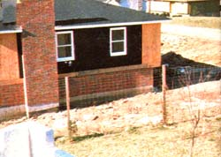
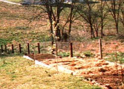
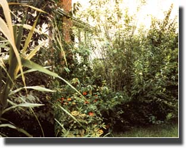

Shelterbelts For Privacy
Make your house a safe haven while providing food for your family ... with walls of living green.
By Branley Allan Branson
May/June 1983
Today's world is complex, challenging ... and crowded! Space is at a premium, and new houses are typically small and close together.
Well, some people may believe that lack of privacy is the price of progress, but I don't think that has to be the case! With a little imagination, some physical labor, and a relatively small outlay of cash, almost any property owner can establish thick shelterbelts of vegetation to cloister his or her home and land ... shutting out unwelcome viewers, muffling offensive sounds, and adding attractive greenery that helps to mop up excess carbon dioxide and break the force of harsh winds. Furthermore, these living fences can even provide food. After all, there's no reason why they can't include trees, shrubs, and herbs that produce edible fruits, nuts, leaves, or roots.
OUTLINING THE PROJECT
You'll probably want to locate your shelterbelts fairly close to your property lines, so-to avoid later arguments with neighbors-the first thing to do is to delineate exactly where the lines are. It will also simplify matters a great deal if you incorporate these boundaries, and all pertinent landscaping information, into a ground plan-drawn to scale, if possible-from which to work. Once the borders are clear, they should be studied to determine which areas will require heavy screening (because of an undesirable view, strong prevailing winds I or proximity to neighbors, for example) I and which need only a lighter, primarily decorative treatment.
WHAT TO CHOOSE
The selection of the kinds of trees, shrubs, or vines used to fill in these areas will depend on several factors, such as the climate zone in which the home is located, the type of soil, the shape and orientation of the plot, and-of course-the property owner's budget!
Nevertheless, the following list may be of some help... but-before making your purchases-do be sure to discuss any selections with an experienced gardener who's familiar with your specific area.
VINES. These are especially effective for quick cover ... and can often provide temporary shelter, allowing slowergrowing trees and the like time to mature: clematis, English ivy, silver-lace vine, trumpet vine, Virginia creeper, wisteria.
HEDGES. Use them for screens in order to block a view completely: boxwood, Canadian hemlock, cardinal autumn olive, hazelnut, hedge maple, holly, privet, Russian olive, tree honeysuckle.
SHRUBS. These are decorative ... and often used to liven up a hedge backdrop: azalea, beauty bush, flowering almond, forsythia, hydrangea, lilac, mock orange, pyracantha, rose of Sharon, spirea, viburnum, weigela.
TREES. Those small to medium in height can be used to highlight special areas and-of course-to provide shade: eastern redbud, European white birch, flowering crab apple, flowering dogwood, mountain ash, purple-leaved plum, viburnum, Washington hawthorn.
PREPARING TO PLANT
Each shelterbelt plot should be spaded to a depth of at least 12 inches and should be well cultivated. If the soil is very heavy or consists principally of clay, dig in leaf litter, peat moss, and other organic matter. A pickup-bed load of dry horse or cow manure for each 60 square feet and (if your soil test indicates a need for it) an appropriate dose of agricultural limestone will insure quick, lush growth after planting. (Your local agricultural extension agent will give you valuable pointers, and will also likely provide a soil test ... at a nominal charge or for free.)
When the initial digging and cultivation are completed, rake the bed smooth, and it'll be ready for planting (you'll still have to dig and prepare holes for any large trees or bushes). However, if you want to include quick-growing running and vining plants in the shelterbelt, you'll want to build a fence row (as shown in the accompanying photo) to support them. Square-mesh, 4-foot-wide, heavy-gauge fencing is ideal for this purpose. For support, I think that creosotetreated 10-foot poles set 2 feet deep in concrete are best ... since they're tall enough for such species as autumnal and regular wisteria, trumpet and Virginia creeper, and Chinese and American bittersweet.
Tree honeysuckle and privets (which won It need the support of a fence row) can often be purchased, at low cost, from nurseries as "whips". The privets should usually be planted in double rows-about 2 feet apart-but the honeysuckle will need more room, because its crown may spread several feet in a short time. Both species grow rapidly and can provide very dense cover. These plants should be pruned each spring, since pruning stimulates lateral branch formation and thus insures optimum seclusion. (In spots where you want nearly complete privacy, simply plant your sheltering shrubs three or more rows deep.)
Once the plants are in the ground, the bed should be deeply mulched to prevent weed growth. I've found that several layers of newspapers, covered with three to four inches of grass clippings, works beautifully. Three inches of rotted sawdust or shredded bark would provide an aesthetically pleasing alternative mulch ... but would also require that you add nitrogen-rich fertilizer to compensate for the fact that some of the soil's nitrogen will be made unavailable to the plants as a result of the breaking down of the woody material.
There'll likely be some portions of your shelterbelt that won't need to provide the kind of security that a double or triple row of hedge offers. In such areas tree honeysuckle, planted 7 or 8 feet apart, will provide a broad, deep, and undulating belt of vegetation. To add visual interest and beauty to the growing fence, you might want to plant various low-growing shrubs interspersed with, or in front of, the honeysuckle. Flowering species that bloom at different times of the year are probably the best choices. (At the ends of property lines, or in spots with expanses of open lawn as a backdrop, a mixture of rose of Sharon and flowering almond would be quite dramatic.)
PATIENCE MAKES PRIVACY
Shelterbelts are made up of living plants ... andsince they do have to "grow into" the job they're designed to do-some people would likely feel that it'd be easier simply to build a board fence around a piece of property. However, while a plank "wall" would offer privacy sooner, fences of living green become more beautiful and more effective with the passage of time ... creating a private refuge, providing shelter and sustenance for the body and spirit, and helping the home to serve as a source of relaxation and renewal to counteract the pressures of the outside world.
|
 This sturdy mesh fence will provide good support for quick-growing vines. |
 Stepped beds on this slope will nurture young trees and shrubs while vines climb the fence and screen the adjoining property |
 A curved bed of flowers, shrubs, and trees is both graceful and effective. |
|
 Full-grown shrubbery can conceal neighboring houses from one another. |
|
|